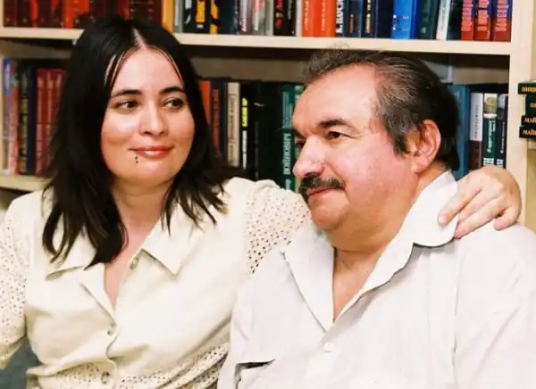
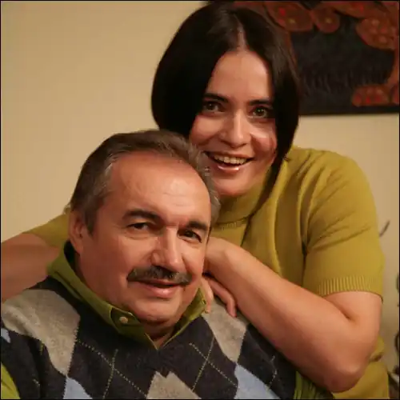

Марина та Сергій Дяченки — подружжя та співавтори Сергій Сергійович Дяченко та Марина Юріївна Дяченко — українські російськомовні письменники-фантасти, сценаристи та редактори. За визначенням самих авторів, вони "є носіями російської мови, що проживають в Україні". У 2009 році залишили Україну та переїхали в Москву. У 2013 році переїхали з Росії у США та відтоді проживають у штаті Каліфорнія.
Автори понад 25 романів та понад вісімдесяти повістей та оповідань. Пишуть твори російською мовою. Лавреати багатьох літературних премій у галузі фантастики. Члени Спілок письменників України та Російської Федерації. На Всесвітніх і Всеєвропейських зборах фантастів "Єврокон—2005" у Глазго Марину і Сергія Дяченків визнано найкращими письменниками-фантастами Європи.
Сергій Дяченко народився 14 квітня 1945 року у Києві. Син видатного українського мікробіолога, професора Сергія Степановича Дяченка. У 1966 році закінчив Київський медичний інститут, працював лікарем-психіатром. Кандидат біологічних наук. 1989 року закінчив сценарний факультет ВДІКу. Член Союзу кінематографістів СРСР з 1987 року, Союзу письменників СРСР з 1983 року. Лавреат Національної премії України ім. Т. Г. Шевченка 1987 року разом з А. Д. Борсюком (режисером), О. І. Фроловим (оператором) за повнометражний науково-популярний фільм "Зірка Вавилова" Київської кіностудії науково-популярних фільмів. Автор кіносценаріїв до фільмів: "Микола Вавилов", "Голод-33", "Гетьманські клейноди", "Генетика і ми", "Природи міцні затвори", "Совість у білому халаті", "Академік Бєляєв", "Зірка Вавилова" та ін. До 2009 року жив і працював у Києві, потім переїхав до Москви. У 2013 році разом з дружиною Мариною переїхали з Росії у США та відтоді проживали у штаті Каліфорнія. На загальноєвропейській конференції фантастів "Єврокон-2005" в Глазго разом з Мариною Дяченко визнаний найкращим письменником-фантастом Європи. У співавторстві з нею написав 25 романів, десятки повістей та оповідань, кілька дитячих книжок. Помер 5 травня 2022 року. Про це повідомила його дружина. Марина Дяченко (до шлюбу — Ширшова) народилася 23 січня 1968 року у Києві. 1989 року закінчила Київський театральний інститут, обрала професію акторки театру та кіно. У фільмі "Вперед, за скарбами гетьмана" зіграла роль Марійки. Після того викладала мистецтво сценічної мови у Київському театральному інституті. Згодом одружилася з письменником Сергієм Дяченком. Письменницьке подружжя дебютувало романом-фентезі "Брамник" (1994), за який отримали премію Єврокону-96. На загальноєвропейській конференції фантастів "Єврокон-2005" у Глазго разом із чоловіком визнана найкращим письменником-фантастом Європи. До 2009 року жила і працювала у Києві, потім переїхала з чоловіком до Москви. У 2013 році вони переїхали з Росії до США, проживали разом в штаті Каліфорнія до смерті чоловіка. Тепер тут мешкає сама. У співавторстві до смерті чоловіка написали 25 романів, десятки повістей та оповідань, кілька дитячих книжок.